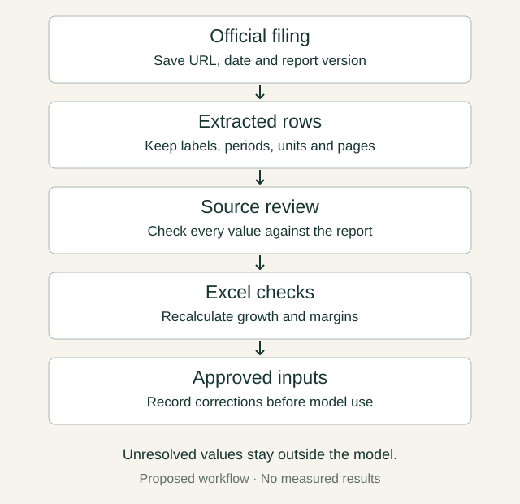

The question behind the score
In my previous note, I asked what I would measure beyond a model’s leaderboard score. Before comparing two models, I want to make the first workflow concrete. Can I trace every number Gemini puts into my spreadsheet back to the source?
That sounds like a modest ambition. But as a finance student interested in financial data and automation, I think this is where the useful work begins. A clean table is easy to read. Knowing whether it contains reported operating profit, an adjusted measure or a figure from the wrong year takes more understanding.
One small task I would trust myself to check
I would start with one shipping company’s official annual report and two comparable years. My request would be narrow: extract revenue, operating profit and operating cash flow. Beside every value, keep the original label, currency, scale, period, page and a short source passage. If the report does not support a number, leave the cell blank.
Then I would separate the extraction from the calculation. In Excel, I would keep raw output on one sheet, manually checked inputs on another, and formulas on a third. I would calculate revenue growth and operating margin myself. Restated comparatives would need a note explaining which version I used. An adjusted measure would not silently replace a reported one.
My starting prompt would be: ‘Use only this report. Return the requested figures with their labels, units, periods and source pages. Flag restatements and adjusted measures. Do not infer missing values or introduce valuation assumptions.’ I would inspect the referenced tables rather than treat a plausible page number as proof.
Vals’ October 16 table gives Argon 65.40% weighted partial credit on Finance Agent v2. The benchmark has 450 questions, three runs and three model judges. Critical-check failures can eliminate task credit; the separate All-Pass measure requires all checks. That score is a reason to investigate, not a forecast of my spreadsheet’s accuracy. I have not verified the current All-Pass ranking.
There is a fair objection: for one small table, doing it manually might be quicker. That is why I would count the time spent finding and correcting errors, not just the time until an answer appears. I have not run this exercise, and access through my own account still needs checking. An app exercise would also differ from the benchmark’s tools and environment.
What I want to learn from it
The skill I want to develop is turning an AI answer into an input I can defend. I would keep a record of missing citations, wrong periods, unit errors and corrections alongside review time. I would also ask whether the comparison itself makes financial sense before interpreting a change in margin.
Only after the manual process works would I explore n8n for collecting new filings and preparing a review queue. I have not configured that integration. New data would need source checks and my approval before entering the model.
The next question follows naturally: when a revised filing arrives, should it change historical data, a forecasting assumption, or both? That is where I want the series to go—from an answer I can inspect to a process I can maintain.
A workflow I would like to explore

Sources
- Gemini 4 Argon: Built to solve your hardest problems — Google · Published 2026-10-13; accessed 2026-10-17
- Finance Agent v2 leaderboard and methodology — Vals AI · Published Updated 2026-10-16; accessed 2026-10-17
- Previous note: One filing, two models — Jaehyuk Song · Published 2026-10-13; accessed 2026-10-17